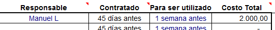

Presupuesto de las Actividades o Eventos
Ingresar en el Panel de Control y sleccionar el botón Presupuesto según la actividad

• • •
Presupuestos de ingresos
Lo primero es entrar en el presupuesto de ingresos, Así sabremos más o menos con que recursos contaremos.
Luego debemos escribir los datos del Administrador del Evento.

Estos datos aparecen de forma automática

Aquí se debe escribir la cantidad estimada de asistentes,
tanto jóvenes como adultos (scouter, colaboradores y rovers en
servicio). Así como los días que se estime dure la actividad, mínimo 1,
es decir si la actividad dura solo unas horas, de igual forma debemos
colocar 1 día.

Montos estimados como factibles, para las cuotas de participación en el evento.
Por persona. Esto debe ser objeto de sumo cuidado, ya que si bien la
idea no es encarecer las actividades, tampoco es factible realizarla
con presupuestos deficitarios.

Ingresos por ventas de artículos relacionados con el evento, o publicidad dentro del mismo

Fondos recibidos para el beneficio de la
organización. Se diferencia de las contribuciones, por que el donante
no reciba ninguna contraprestación de nuestra parte.

Finalmente llenamos lo referente a lo que esperamos obtener como contribuciones,
que son todos aquellos fondos o aportes hechos a la organización por
personas particulares, empresas u organizaciones, como parte de un
proyecto o actividad, donde ambas partes se beneficien. Por ejemplo:
Una empresa aporta dinero para comprar plantas, que luego los Scouts y
el personal de esa empresa utilizarán en una campaña de arborización en
conjunto.
Asi comootros ingresos, osea lo que no están contemplados dentro de los otros.

Superavit o Deficit del Presupuesto, aquí se indica de manera automática si sobrará o faltará dinero, segun las estimaciones realizadas.

Nota Si aparece en números rojos o negativos, quiere decir que el dinero previsto no alcanzará para cubrir el Evento

Presupuesto de Egresos
Buscar en la parte inferior la pestaña adecuada para ingresar a la página de Egresos.

Todo el encabezado de esta página, se llena de forma automática.


Cada uno de los posibles elementos que se
pueden usar en una actividad Scout, están contemplados en esta hoja,
por lo cual lo único que hay que hacer es escoger cuales nos harán
falta, colocar la cantidad el valor y listo.
Así mismo podemos observar como los distintos elementos están divididos
por áreas (Programa. Comunicaciones, etc…) y estas áreas se organizan,
en rubros más específicos, de manera que sea más sencillo hubicarlos.
Cantidades
Para que podamos tener el monto de cada uno de los elementos que vamos a necesitar, debemos definir sus
cantidades

DIAS... Número de días durante los cuales se va a usar el bien, material o servicio,
debe ser Mínimo 1 día, esto es por que algunos materiales y servicios
no se necesitan durante todo el evento, y esto hay que definirlo.
Por ejemplo: estamos tratando lo de las insignias, estas sólo las necesitaremos el último día en la clausura, entonces anotamos 1.
Ejemplo 2: Estamos
calculando lo referente al local o sitio para un acantonamiento, si
este dura 3 días el lugar lo vamos a necesitar por 3 días, por lo cual
escribimos 3.
CANT... Definir la cantidad
del bien o material a usar por cada día, de manera que se multiplica este número
por los días que se usará, dando como resultado la CANTIDAD total requerida de
ese bien o servicio.
Por ejemplo: Si
estamos calculando la cantidad de bolsas para basura que necesitamos en
el campo, y determinamos que hacen falta 3 diarias, entonces anotamos
3.
COSTO UNIT… Aquí se señala cuanto cuesta cada unidad del bien o servicio requerido.
Por ejemplo: Si estamos definiendo el costo de los desayunos, y cada desayuno por participante nos cuesta Bs. 25, anotamos 25.

RESPONSABLE... Nombre de la persona encargad de comprara el bien o cobtratar el servicio.
Por ejemplo: Manuel Lucena.
CONTARTADO... esta es una sugerencia del momento en que ha de adquirirse el bien o contratar el servicio.
PARA SER UTILIZADO... esta es una sugerencia del momento en que ha de ser usado el bien o servicio.
COSTO TOTAL... monto que resulta de multiplicar los DIASxCANTxCOSTO UNIT, osea es lo que se deberá devengar por ese concepto.
Ayudas
Para
acceder a este Instructivo, pulse sobre el
botón ? .